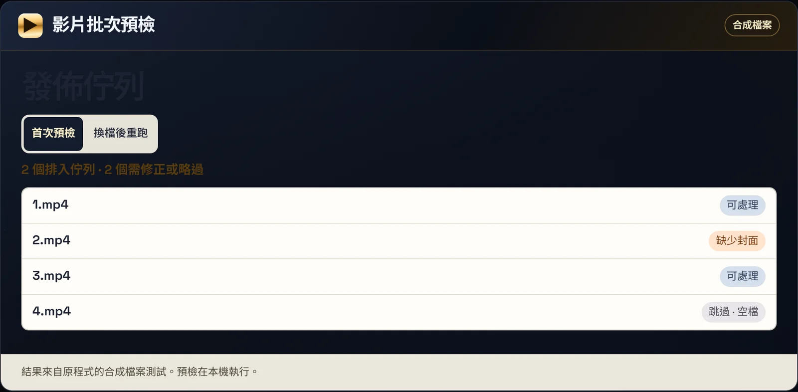

← 全部作品／ 影音與發佈
影音與發佈 · 互動個案
YouTube 自動發佈
ChatGPT 為每支影片生成封面和標題，程式再經 YouTube Studio 網頁介面逐支上傳影片、封面和說明，由生成到發佈不用人手。


成果影片批次 → 自動發佈
§ 重點
一眼看懂
- 流程
- 生成封面和標題Playwright 操作 ChatGPT 網頁，按固定提示生成封面圖和標題，下載到批次資料夾。
- 配對素材以編號對照影片、標題和封面，缺件的影片不會上傳。
- 網頁上傳Playwright 操作 YouTube Studio，逐支填標題、說明、封面和設定後發佈，每支結果寫入日誌。
- 工具
- Playwright
- Node.js
- Python
- PowerShell
§ 試用
親手試用
影片批次預檢
示例檔案發佈佇列
載入預檢結果…
結果來自原程式的示例檔案測試。預檢在本機執行。
§ 做法做法細節
公開示範使用原配對程式的示例檔案測試結果，可比較換檔前後兩輪。
網頁介面上傳
- 方式
- 經 YouTube Studio 網頁介面逐支上傳。
- 代價
- 網頁介面隨時改版，所以每一步都要有重試、截圖和日誌。
流程
- 排程
- PowerShell 排程腳本嚴格按「生成 → 上傳」次序執行，每個頻道各自處理。
- 生成
- Python 以 Playwright 開啟已登入的瀏覽器，在 ChatGPT 對話中按固定提示逐張生成封面和標題並下載；每張之間有間隔，已完成的下次自動跳過。
- 額度
- 撞到 ChatGPT 額度上限時，讀出重置時間，到時才重試，不盲目重試；圖片可改由 Gemini 補上。
- 封面
- YouTube 自訂封面上限 2 MB，超過的先自動壓縮。
- 上傳
- Node.js 以 Playwright 操作 YouTube Studio：選取影片 → 標題 → 說明 → 封面 → AI 內容揭露 → 兒童內容 → 瀏覽權限。
穩定性
- 預演
- dry run 只掃描配對、列出問題，不開瀏覽器。
- 重試
- 每個介面步驟重試 3 次，每支影片整體重試 2 次；失敗時自動截圖。
- 隔離
- 一支失敗不影響其他；上傳紀錄按批次記下每支的狀態，可以續傳。
- 保護
- 素材未配對完成的批次不會被清理，避免檔案被誤刪。